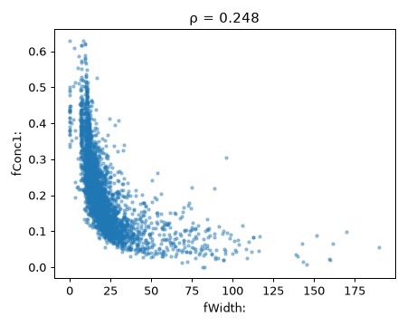
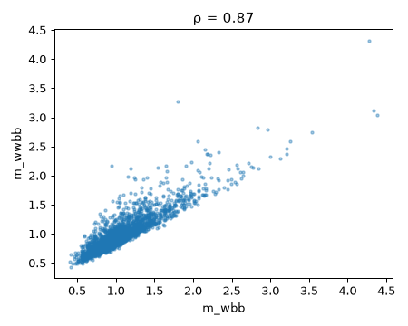
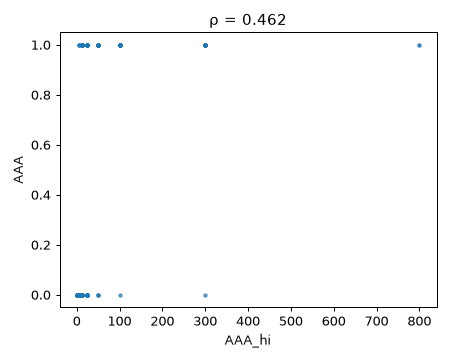
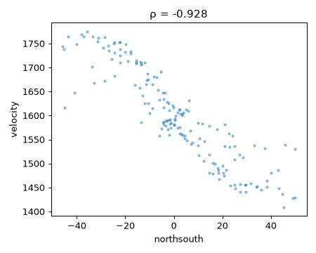
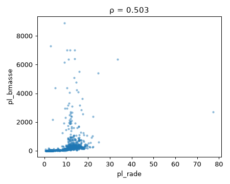

Sujets › Astronomie et physique
Question : Quelles régularités physiques émergent des mesures (étoiles, pulsars, particules), et quels objets anormaux méritent un second regard ?
2026-11-06 à 03:45 · 7 datasets analysés · interprété par gemini-3.5-flash-lite
Méthode : chaque dataset est coupé en deux moitiés fixes. Les découvertes sont cherchées sur la 1re moitié puis revérifiées sur la 2e (✔ confirmé / ✘ non confirmé) ; les hypothèses sont testées uniquement sur la 2e moitié.
Proposées par le LLM lors d'un run précédent, testées ici par la Raspberry.
NRf · y = Ps30 · groupe = setting_1Ce qui est testé exactement : Le lien entre NRf et Ps30 change-t-il selon setting_1, et est-il plus fort au dessus du seuil ?
Dans SoyVitou/NASA-C-MAPSS-Turbofan-Engine, la corrélation NRf~Ps30 vaut +0.57 pour « setting_1 > 25.0016 » contre +0.42 pour « setting_1 ≤ 25.0016 » (p = 1.1e-65). Attention : relation non linéaire ou valeurs extrêmes dans « setting_1 ≤ 25.0016, setting_1 > 25.0016 » (Spearman ≠ Pearson) ; un modèle non linéaire (GAM, splines, log) serait plus adapté. [Testé sur : moitié de confirmation (30545 lignes jamais vues à l'exploration)]
Littérature : La littérature sur les moteurs turbofan étudie largement la dégradation des capteurs et les régimes opérationnels par seuils.
Hypothèse du sujet Détection d'anomalies et pannes, testée pendant ce run.
ejection_fraction · y = serum_creatinine · groupe = diabetesCe qui est testé exactement : Le lien entre ejection_fraction et serum_creatinine change-t-il selon diabetes ?
Dans Heart_Failure_Prediction, la corrélation ejection_fraction~serum_creatinine vaut -0.15 pour « diabetes = 0.0 » contre -0.34 pour « diabetes = 1.0 » (écart 0.18, p = 0.012). Attention : relation non linéaire ou valeurs extrêmes dans « diabetes = 0.0 » (Spearman ≠ Pearson) ; un modèle non linéaire (GAM, splines, log) serait plus adapté. [Testé sur : moitié de confirmation (660 lignes jamais vues à l'exploration)] ATTENTION : 3680 lignes recopiées à l'identique (74%) : données probablement augmentées ou synthétiques, retirées avant analyse. (Retesté le 06/11 après correction du découpage : les doublons faussaient la première confirmation.)
Littérature : L'interaction entre diabète, insuffisance rénale et fraction d'éjection est un classique de la cardiologie clinique.
Hypothèse du sujet Santé métabolique, testée pendant ce run.
cycle · y = T50 · seuil = 150Ce qui est testé exactement : Le lien entre cycle et T50 est-il différent de cycle = 150 ?
Dans SoyVitou/NASA-C-MAPSS-Turbofan-Engine, la corrélation cycle~T50 vaut +0.04 pour « cycle > 150 » contre +0.03 pour « cycle ≤ 150 » (écart 0.00, p = 0.93). [Testé sur : moitié de confirmation (30545 lignes jamais vues à l'exploration)]
Littérature : La détection d'anomalies et l'analyse de cycle dans les turbines d'avion font l'objet d'une vaste littérature en maintenance prédictive.
Hypothèse du sujet Détection d'anomalies et pannes, testée pendant ce run.
pl_bmasse · y = pl_rade · groupe = discoverymethodCe qui est testé exactement : Le lien entre pl_bmasse et pl_rade change-t-il selon discoverymethod ?
northsouth · y = velocity · groupe = angleCe qui est testé exactement : Le lien entre northsouth et velocity change-t-il selon angle ?
fWidth: · y = fConc1: · groupe = classCe qui est testé exactement : Le lien entre fWidth: et fConc1: change-t-il selon class ?
st_teff · y = st_mass · groupe = disc_year · seuil = 2015.0Ce qui est testé exactement : Le lien entre st_teff et st_mass change-t-il selon disc_year (coupé à 2015), et est-il plus fort au dessus du seuil ?
pl_rade ~ pl_bmasseIl existe un lien non linéaire robuste entre la masse et le rayon des exoplanètes, reflétant des régimes de composition variés (terrestres, gazeuses).
spearman = 0.845, pearson = 0.342, n = 771, confirmation = confirmé — ρ = +0.82 sur 808 lignes (découverte : +0.84) · score 1.00
st_teff ~ st_radLa température effective et le rayon stellaire montrent une forte monotonie non linéaire liée à l'évolution stellaire sur la séquence principale.
spearman = 0.749, pearson = -0.046, n = 2689, confirmation = confirmé — ρ = +0.74 sur 2784 lignes (découverte : +0.75) · score 1.00
st_rad ~ st_massLe rayon et la masse des étoiles sont fortement corrélés de manière non linéaire, conformément aux modèles d'évolution stellaire.
spearman = 0.942, pearson = 0.397, n = 2344, confirmation = confirmé — ρ = +0.94 sur 2446 lignes (découverte : +0.94) · score 1.00
AAA_hi ~ AAALiaison interne cohérente entre les mesures de flux des éruptions solaires (AAA_hi et AAA).
spearman = 0.819, pearson = 0.357, n = 6218, confirmation = confirmé — ρ = +0.82 sur 6237 lignes (découverte : +0.82) · score 0.96
pl_orbsmax ~ sy_vmagLien inverse inattendu entre le demi-grand axe orbital des exoplanètes et la magnitude apparente de l'étoile hôte, biais observationnel classique.
spearman = -0.444, pearson = 0.019, n = 1816, confirmation = confirmé — ρ = -0.42 sur 1827 lignes (découverte : -0.44) · score 0.93
anomalies -> discoverymethod = ImagingConcentration d'anomalies purement méthodologique liée aux méthodes de découverte par imagerie directe.
taux_dans_ce_groupe = 47.4%, taux_global = 2.0%, p = 3.2e-141, confirmation = non applicable — résultat descriptif · score 0.90
AAA_lo ~ AAALien fort entre la limite inférieure et la valeur centrale des mesures de flux solaires.
spearman = 0.819, pearson = 0.433, n = 6218, confirmation = confirmé — ρ = +0.82 sur 6237 lignes (découverte : +0.82) · score 0.89
HHH_y-pos ~ AAA_Y-posCorrélation spatiale entre les coordonnées des positions des éruptions solaires.
spearman = 0.619, pearson = 0.252, n = 6218, confirmation = confirmé — ρ = +0.62 sur 6237 lignes (découverte : +0.62) · score 0.87
pl_orbsmax ~ st_radLien entre le demi-grand axe et le rayon stellaire, traduisant les limites de détection selon la taille de l'étoile.
spearman = 0.363, pearson = 0.003, n = 1579, confirmation = confirmé — ρ = +0.33 sur 1606 lignes (découverte : +0.36) · score 0.86
st_teff ~ st_massRelation physique fondamentale de la séquence principale entre température effective et masse stellaire.
spearman = 0.783, pearson = 0.452, n = 2383, confirmation = confirmé — ρ = +0.79 sur 2462 lignes (découverte : +0.78) · score 0.83
* -> velocityForte prédictibilité de la vitesse galactique à partir des coordonnées spatiales, traduisant la cinématique globale de la galaxie.
r2 = 0.932, baseline = -0.119, avec_seulement_northsouth = 0.811, confirmation = confirmé — r2 = 0.95 sur des données jamais vues (hasard 0.00, découverte 0.932) · score 0.80
pl_bmasse ~ pl_orbsmaxLien entre masse de la planète et rayon orbital, influencé par les biais de détection des méthodes de vitesses radiales ou transit.
spearman = 0.482, pearson = 0.192, n = 1399, confirmation = confirmé — ρ = +0.46 sur 1379 lignes (découverte : +0.48) · score 0.79
northsouth -> velocityLa variable spatiale northsouth porte naturellement l'information sur la vitesse dans ce modèle de galaxie idéalisée.
mutual_info = 1.221, part_de_l_info = 0.37, confirmation = non applicable — revalidation impossible ('b') · score 0.77
fWidth: ~ fConc1:Relation géométrique inverse entre la largeur de la gerbe Tcherenkov et la concentration de lumière (fConc1:).
spearman = -0.828, pearson = -0.58, n = 9376, confirmation = confirmé — ρ = -0.83 sur 9644 lignes (découverte : -0.83) · score 0.75
fWidth: ~ fConc:Lien géométrique similaire entre largeur et concentration globale de photons dans le télescope MAGIC.
spearman = -0.852, pearson = -0.61, n = 9376, confirmation = confirmé — ρ = -0.86 sur 9644 lignes (découverte : -0.85) · score 0.74
northsouth ~ velocityCourbe de rotation galactique manifeste montrant la relation cinématique entre position et vitesse radiale.
spearman = -0.928, pearson = -0.903, n = 165, q = 1.2e-70, confirmation = confirmé — ρ = -0.91 sur 158 lignes (découverte : -0.93) · score 0.74
eastwest ~ radialpositionStructure spatiale interne cohérente dans la visualisation des données de galaxies.
spearman = 0.912, pearson = 0.853, n = 165, q = 2.5e-64, confirmation = confirmé — ρ = +0.89 sur 158 lignes (découverte : +0.91) · score 0.73
fSize: ~ fConc:Forte corrélation mécanique entre la taille totale de l'image (fSize:) et la concentration de lumière (fConc:).
spearman = -0.911, pearson = -0.85, n = 9376, q = 0.0, confirmation = confirmé — ρ = -0.91 sur 9644 lignes (découverte : -0.91) · score 0.73
fSize: ~ fM3Long:Lien morphologique entre l'intensité de la gerbe (fSize:) et son moment d'ordre supérieur (fM3Long:).
spearman = 0.329, pearson = 0.104, n = 9376, confirmation = confirmé — ρ = +0.32 sur 9644 lignes (découverte : +0.33) · score 0.73
spot_distribution -> classVariable catégorielle descriptive directement liée à la définition de la classe d'éruption solaire.
mutual_info = 0.601, part_de_l_info = 0.31, confirmation = non applicable — revalidation impossible ('b') · score 0.71
largest_spot_size -> classRedondance logique entre la taille de la tache solaire et la classe d'activité de l'éruption.
mutual_info = 0.592, part_de_l_info = 0.31, confirmation = non applicable — revalidation impossible ('b') · score 0.71
fSize: ~ fConc1:Lien mécanique interne entre l'intensité globale de l'image et sa concentration mesurée sur les pixels principaux.
spearman = -0.883, pearson = -0.807, n = 9376, q = 0.0, confirmation = confirmé — ρ = -0.89 sur 9644 lignes (découverte : -0.88) · score 0.71
m_wbb ~ m_wwbbCorrélation par construction entre des masses invariantes de sous-systèmes et de systèmes globaux en physique des hautes énergies.
spearman = 0.87, pearson = 0.896, n = 20000, q = 0.0, confirmation = confirmé — ρ = +0.88 sur 19999 lignes (découverte : +0.87) · score 0.70
fWidth: ~ fConc:Doublon quasi parfait avec le résultat F15.
spearman = -0.852, pearson = -0.61, n = 9376, q = 0.0, confirmation = confirmé — ρ = -0.86 sur 9644 lignes (découverte : -0.85) · score 0.68
radialposition -> velocityLien direct entre la position radiale et la vitesse dans un modèle cinématique de galaxie.
mutual_info = 0.925, part_de_l_info = 0.28, confirmation = non applicable — revalidation impossible ('b') · score 0.68
fWidth: ~ fSize:Lien mécanique entre la taille globale de l'image de la gerbe et sa largeur géométrique.
spearman = 0.838, pearson = 0.719, n = 9376, q = 0.0, confirmation = confirmé — ρ = +0.84 sur 9644 lignes (découverte : +0.84) · score 0.67
fLength: ~ fSize:Lien mécanique entre la taille globale de l'image et sa longueur géométrique dans les détecteurs Tcherenkov.
spearman = 0.831, pearson = 0.705, n = 9376, q = 0.0, confirmation = confirmé — ρ = +0.84 sur 9644 lignes (découverte : +0.83) · score 0.66
AAA_lo ~ AAADépendance arithmétique directe entre la borne inférieure et la mesure principale d'un flux d'éruption.
spearman = 0.819, pearson = 0.433, n = 6218, q = 0.0, confirmation = confirmé — ρ = +0.82 sur 6237 lignes (découverte : +0.82) · score 0.66
AAA_hi ~ AAADépendance arithmétique directe entre la borne supérieure et la mesure principale d'un flux d'éruption.
spearman = 0.819, pearson = 0.357, n = 6218, q = 0.0, confirmation = confirmé — ρ = +0.82 sur 6237 lignes (découverte : +0.82) · score 0.66
angle -> velocityLien géométrique direct entre l'angle de position et la vitesse dans la visualisation de la galaxie.
mutual_info = 0.587, part_de_l_info = 0.18, confirmation = non applicable — revalidation impossible ('b') · score 0.58
**Author**: R. K. Bock. Major Atmospheric Gamma Imaging Cherenkov Telescope project (MAGIC) Donated by P. Savicky, Institute of Computer Science, AS of CR, Czech Republic **Source**: [UCI](https://archive.ics.uci.edu/ml/datasets/magic+gamma+telescope) **Please cite**: Bock, R.K., Chilingarian, A., G

fWidth: ~ fConc1: spearman = -0.828, pearson = -0.58, n = 9376, confirmation = confirmé — ρ = -0.83 sur 9644 lignes (découverte : -0.83)fWidth: ~ fConc: spearman = -0.852, pearson = -0.61, n = 9376, confirmation = confirmé — ρ = -0.86 sur 9644 lignes (découverte : -0.85)fSize: ~ fConc: spearman = -0.911, pearson = -0.85, n = 9376, q = 0.0, confirmation = confirmé — ρ = -0.91 sur 9644 lignes (découverte : -0.91)fSize: ~ fM3Long: spearman = 0.329, pearson = 0.104, n = 9376, confirmation = confirmé — ρ = +0.32 sur 9644 lignes (découverte : +0.33)fSize: ~ fConc1: spearman = -0.883, pearson = -0.807, n = 9376, q = 0.0, confirmation = confirmé — ρ = -0.89 sur 9644 lignes (découverte : -0.88)fWidth: ~ fConc: spearman = -0.852, pearson = -0.61, n = 9376, q = 0.0, confirmation = confirmé — ρ = -0.86 sur 9644 lignes (découverte : -0.85)fWidth: ~ fSize: spearman = 0.838, pearson = 0.719, n = 9376, q = 0.0, confirmation = confirmé — ρ = +0.84 sur 9644 lignes (découverte : +0.84)fLength: ~ fSize: spearman = 0.831, pearson = 0.705, n = 9376, q = 0.0, confirmation = confirmé — ρ = +0.84 sur 9644 lignes (découverte : +0.83)fWidth: ~ fConc1: spearman = -0.828, pearson = -0.58, n = 9376, q = 0.0, confirmation = confirmé — ρ = -0.83 sur 9644 lignes (découverte : -0.83)fLength: ~ fConc: spearman = -0.825, pearson = -0.633, n = 9376, q = 0.0, confirmation = confirmé — ρ = -0.83 sur 9644 lignes (découverte : -0.82)fLength: ~ fConc1: spearman = -0.8, pearson = -0.6, n = 9376, q = 0.0, confirmation = confirmé — ρ = -0.81 sur 9644 lignes (découverte : -0.80)fAlpha: -> class: mutual_info = 0.12, part_de_l_info = 0.22, confirmation = non applicable — revalidation impossible ('b')fLength: ~ fWidth: spearman = 0.752, pearson = 0.771, n = 9376, q = 0.0, confirmation = confirmé — ρ = +0.75 sur 9644 lignes (découverte : +0.75)fWidth: -> class: mutual_info = 0.094, part_de_l_info = 0.17, confirmation = non applicable — revalidation impossible ('b')fM3Long: -> class: mutual_info = 0.073, part_de_l_info = 0.13, confirmation = non applicable — revalidation impossible ('b')**Author**: Gary Bradshaw **Source**: [UCI](http://archive.ics.uci.edu/ml/datasets/solar+flare) **Please cite**: **Solar Flare database** Relevant Information: -- The database contains 3 potential classes, one for the number of times a certain type of solar flare occured in a 24 hour period. -- Each
spot_distribution -> class mutual_info = 0.601, part_de_l_info = 0.31, confirmation = non applicable — revalidation impossible ('b')largest_spot_size -> class mutual_info = 0.592, part_de_l_info = 0.31, confirmation = non applicable — revalidation impossible ('b')spot_distribution ~ Area cramers_v = 0.783, p = 8.6e-22, confirmation = confirmé — V = 0.51 (découverte : 0.78)X-class_flares_production_by_this_region -> class mutual_info = 0.171, part_de_l_info = 0.09, confirmation = non applicable — revalidation impossible ('b')spot_distribution ~ class cramers_v = 0.628, p = 3.3e-35, confirmation = confirmé — V = 0.65 (découverte : 0.63)Area_of_the_largest_spot ~ class cramers_v = 0.574, p = 4.6e-11, confirmation = confirmé — V = 0.61 (découverte : 0.57)largest_spot_size ~ Area_of_the_largest_spot cramers_v = 0.572, p = 2e-10, confirmation = confirmé — V = 0.61 (découverte : 0.57)largest_spot_size ~ class cramers_v = 0.546, p = 4.9e-31, confirmation = confirmé — V = 0.57 (découverte : 0.55)Area ~ M-class_flares_production_by_this_region cramers_v = 0.522, p = 9.7e-10, confirmation = confirmé — V = 0.32 (découverte : 0.52)C-class_flares_production_by_this_region ~ M-class_flares_production_by_this_region cramers_v = 0.516, p = 8.1e-17, confirmation = NON confirmé — V = 0.25 (découverte : 0.52)* -> class balanced_accuracy = 0.635, baseline = 0.2, avec_seulement_spot_distribution = 0.456, confirmation = confirmé — balanced_accuracy = 0.70 sur des données jamais vues (hasard 0.20, découverte 0.635)largest_spot_size ~ Historically-complex cramers_v = 0.474, p = 5.7e-07, confirmation = confirmé — V = 0.59 (découverte : 0.47)largest_spot_size ~ spot_distribution cramers_v = 0.454, p = 5.8e-15, confirmation = confirmé — V = 0.47 (découverte : 0.45)Activity ~ Previous_24_hour_flare_activity_code cramers_v = 0.449, p = 8.4e-09, confirmation = confirmé — V = 0.60 (découverte : 0.45)spot_distribution ~ Did_region_become_historically_complex cramers_v = 0.432, p = 9.6e-07, confirmation = confirmé — V = 0.52 (découverte : 0.43)**Author**: Daniel Whiteson daniel'@'uci.edu", Assistant Professor, Physics, Univ. of California Irvine **Source**: [UCI](https://archive.ics.uci.edu/ml/datasets/HIGGS) **Please cite**: Baldi, P., P. Sadowski, and D. Whiteson. Searching for Exotic Particles in High-energy Physics with Deep Learning.

m_wbb ~ m_wwbb spearman = 0.87, pearson = 0.896, n = 20000, q = 0.0, confirmation = confirmé — ρ = +0.88 sur 19999 lignes (découverte : +0.87)m_bb ~ m_wbb spearman = 0.564, pearson = 0.573, n = 20000, q = 0.0, confirmation = confirmé — ρ = +0.56 sur 19999 lignes (découverte : +0.56)m_jlv ~ m_wbb spearman = 0.551, pearson = 0.578, n = 20000, q = 0.0, confirmation = confirmé — ρ = +0.56 sur 19999 lignes (découverte : +0.55)m_jlv ~ m_wwbb spearman = 0.549, pearson = 0.554, n = 20000, q = 0.0, confirmation = confirmé — ρ = +0.56 sur 19999 lignes (découverte : +0.55)jet1pt ~ m_wbb spearman = 0.44, pearson = 0.472, n = 20000, q = 0.0, confirmation = confirmé — ρ = +0.45 sur 19999 lignes (découverte : +0.44)jet1pt ~ m_wwbb spearman = 0.408, pearson = 0.435, n = 20000, q = 0.0, confirmation = confirmé — ρ = +0.42 sur 19999 lignes (découverte : +0.41)m_bb ~ m_wwbb spearman = 0.405, pearson = 0.429, n = 20000, q = 0.0, confirmation = confirmé — ρ = +0.41 sur 19999 lignes (découverte : +0.41)m_jj ~ m_jjj spearman = 0.402, pearson = 0.775, n = 20000, q = 0.0, confirmation = confirmé — ρ = +0.40 sur 19999 lignes (découverte : +0.40)anomalies ~ m_wbb, m_wwbb, m_jjj n_anomalies = 400, sur = 20000, variables_qui_les_distinguent = m_wbb (3.9 σ), m_wwbb (3.6 σ), m_jjj (3.5 σ), confirmation = non applicable — résultat descriptif* -> class balanced_accuracy = 0.707, baseline = 0.5, avec_seulement_m_bb = 0.629, confirmation = confirmé — balanced_accuracy = 0.72 sur des données jamais vues (hasard 0.50, découverte 0.707)Context The subject of this dataset is multi-instrument observations of solar flares. There are a number of space-based instruments that are able to observe solar flares on the Sun; some instruments observe the entire Sun all the time, and some only observe part of the Sun some of the time. We know

AAA_hi ~ AAA spearman = 0.819, pearson = 0.357, n = 6218, confirmation = confirmé — ρ = +0.82 sur 6237 lignes (découverte : +0.82)AAA_lo ~ AAA spearman = 0.819, pearson = 0.433, n = 6218, confirmation = confirmé — ρ = +0.82 sur 6237 lignes (découverte : +0.82)HHH_y-pos ~ AAA_Y-pos spearman = 0.619, pearson = 0.252, n = 6218, confirmation = confirmé — ρ = +0.62 sur 6237 lignes (découverte : +0.62)AAA_lo ~ AAA spearman = 0.819, pearson = 0.433, n = 6218, q = 0.0, confirmation = confirmé — ρ = +0.82 sur 6237 lignes (découverte : +0.82)AAA_hi ~ AAA spearman = 0.819, pearson = 0.357, n = 6218, q = 0.0, confirmation = confirmé — ρ = +0.82 sur 6237 lignes (découverte : +0.82)HHH_X-pos ~ AAA_X-pos spearman = 0.638, pearson = 0.525, n = 6218, q = 0.0, confirmation = confirmé — ρ = +0.64 sur 6237 lignes (découverte : +0.64)HHH_y-pos ~ AAA_Y-pos spearman = 0.619, pearson = 0.252, n = 6218, q = 0.0, confirmation = confirmé — ρ = +0.62 sur 6237 lignes (découverte : +0.62)anomalies ~ AAA_hi, AAA_lo, DDD n_anomalies = 125, sur = 6218, variables_qui_les_distinguent = AAA_hi (3.4 σ), AAA_lo (3.2 σ), DDD (1.6 σ), confirmation = non applicable — résultat descriptif**Author**: **Source**: Unknown - Date unknown **Please cite**: This S dump contains 22 data sets from the book Visualizing Data published by Hobart Press (books@hobart.com). The dump was created by data.dump() and can be read back into S by data.restore(). The name of each S data set is the name of

* -> velocity r2 = 0.932, baseline = -0.119, avec_seulement_northsouth = 0.811, confirmation = confirmé — r2 = 0.95 sur des données jamais vues (hasard 0.00, découverte 0.932)northsouth -> velocity mutual_info = 1.221, part_de_l_info = 0.37, confirmation = non applicable — revalidation impossible ('b')northsouth ~ velocity spearman = -0.928, pearson = -0.903, n = 165, q = 1.2e-70, confirmation = confirmé — ρ = -0.91 sur 158 lignes (découverte : -0.93)eastwest ~ radialposition spearman = 0.912, pearson = 0.853, n = 165, q = 2.5e-64, confirmation = confirmé — ρ = +0.89 sur 158 lignes (découverte : +0.91)radialposition -> velocity mutual_info = 0.925, part_de_l_info = 0.28, confirmation = non applicable — revalidation impossible ('b')angle -> velocity mutual_info = 0.587, part_de_l_info = 0.18, confirmation = non applicable — revalidation impossible ('b')radialposition ~ velocity spearman = 0.653, pearson = 0.68, n = 165, q = 6.5e-21, confirmation = confirmé — ρ = +0.65 sur 158 lignes (découverte : +0.65)eastwest ~ velocity spearman = 0.478, pearson = 0.397, n = 165, q = 2e-10, confirmation = confirmé — ρ = +0.47 sur 158 lignes (découverte : +0.48)northsouth ~ radialposition spearman = -0.437, pearson = -0.456, n = 165, q = 8.7e-09, confirmation = confirmé — ρ = -0.41 sur 158 lignes (découverte : -0.44)**Data Description** Predict the number of common solar flares. The database contains 3 classes, one for the number of times a certain type of solar flare occurred in a 24 hour period. Each instance represents captured features for 1 active region on the sun. **Attribute Description** 1. *class* - c
class ~ spot_distribution cramers_v = 0.681, p = 9.2e-162, confirmation = confirmé — V = 0.67 (découverte : 0.68)largest_spot_size ~ area cramers_v = 0.606, p = 7e-44, confirmation = confirmé — V = 0.67 (découverte : 0.61)spot_distribution ~ complex_path cramers_v = 0.574, p = 5e-41, confirmation = confirmé — V = 0.55 (découverte : 0.57)class ~ complex_path cramers_v = 0.574, p = 3.2e-39, confirmation = confirmé — V = 0.55 (découverte : 0.57)class ~ largest_spot_size cramers_v = 0.515, p = 1.7e-145, confirmation = confirmé — V = 0.55 (découverte : 0.52)spot_distribution ~ area cramers_v = 0.508, p = 4.2e-32, confirmation = confirmé — V = 0.67 (découverte : 0.51)class ~ complex cramers_v = 0.475, p = 1.9e-26, confirmation = confirmé — V = 0.41 (découverte : 0.47)spot_distribution ~ activity cramers_v = 0.458, p = 4.4e-26, confirmation = confirmé — V = 0.40 (découverte : 0.46)largest_spot_size ~ complex cramers_v = 0.456, p = 3.2e-24, confirmation = confirmé — V = 0.46 (découverte : 0.46)largest_spot_size ~ spot_distribution cramers_v = 0.412, p = 6.4e-54, confirmation = confirmé — V = 0.52 (découverte : 0.41)NASA Exoplanet Archive <div align="center" <img src="banner.jpg" alt="Artist concept of the surface of TRAPPIST-1f exoplanet" width="400" <p <em Credit: NASA/JPL-Caltech</em </p </div Part of a dataset collection (https://huggingface.co/collections/juliensimon/astronomy-datasets-69c24caf2f17e3612894

pl_rade ~ pl_bmasse spearman = 0.845, pearson = 0.342, n = 771, confirmation = confirmé — ρ = +0.82 sur 808 lignes (découverte : +0.84)st_teff ~ st_rad spearman = 0.749, pearson = -0.046, n = 2689, confirmation = confirmé — ρ = +0.74 sur 2784 lignes (découverte : +0.75)st_rad ~ st_mass spearman = 0.942, pearson = 0.397, n = 2344, confirmation = confirmé — ρ = +0.94 sur 2446 lignes (découverte : +0.94)pl_orbsmax ~ sy_vmag spearman = -0.444, pearson = 0.019, n = 1816, confirmation = confirmé — ρ = -0.42 sur 1827 lignes (découverte : -0.44)anomalies -> discoverymethod = Imaging taux_dans_ce_groupe = 47.4%, taux_global = 2.0%, p = 3.2e-141, confirmation = non applicable — résultat descriptifpl_orbsmax ~ st_rad spearman = 0.363, pearson = 0.003, n = 1579, confirmation = confirmé — ρ = +0.33 sur 1606 lignes (découverte : +0.36)st_teff ~ st_mass spearman = 0.783, pearson = 0.452, n = 2383, confirmation = confirmé — ρ = +0.79 sur 2462 lignes (découverte : +0.78)pl_bmasse ~ pl_orbsmax spearman = 0.482, pearson = 0.192, n = 1399, confirmation = confirmé — ρ = +0.46 sur 1379 lignes (découverte : +0.48)st_rad ~ st_mass spearman = 0.942, pearson = 0.397, n = 2344, q = 0.0, confirmation = confirmé — ρ = +0.94 sur 2446 lignes (découverte : +0.94)pl_orbper ~ pl_bmasse spearman = 0.366, pearson = 0.13, n = 1399, confirmation = confirmé — ρ = +0.36 sur 1432 lignes (découverte : +0.37)sy_dist ~ dec spearman = 0.32, pearson = -0.102, n = 3124, confirmation = confirmé — ρ = +0.31 sur 3199 lignes (découverte : +0.32)pl_rade ~ pl_bmasse spearman = 0.845, pearson = 0.342, n = 771, q = 3.2e-210, confirmation = confirmé — ρ = +0.82 sur 808 lignes (découverte : +0.84)st_teff ~ st_mass spearman = 0.783, pearson = 0.452, n = 2383, q = 0.0, confirmation = confirmé — ρ = +0.79 sur 2462 lignes (découverte : +0.78)st_teff ~ st_rad spearman = 0.749, pearson = -0.046, n = 2689, q = 0.0, confirmation = confirmé — ρ = +0.74 sur 2784 lignes (découverte : +0.75)sy_dist ~ sy_vmag spearman = 0.714, pearson = 0.615, n = 2958, q = 0.0, confirmation = confirmé — ρ = +0.71 sur 3062 lignes (découverte : +0.71)